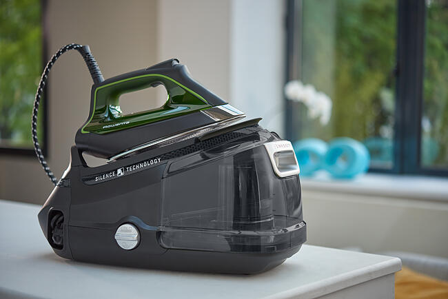

ROWENTA Silence Steam Pro DG9249 Steam Generator Iron - Black



Our most powerful and silent high pressure steam generator iron in an eco-friendly design.
Iron better, faster, with ultra-powerful steam diffusion and effortless glide
Get superb results with 160g/min continuous steam and a 600g/min boost
ave 30% energy without compromising on performance with Eco mode
Enjoy all the power with less noise thanks to silent pump technology
STEAM & POWER PERFORMANCE
Power 2400 W
Steam output 120 g/min
Steam pressure 6 bar
Vertical Steam
Setting of steam & temperature Manual setting
Heat up time 2 min
High pressure boiler
Fast and effortless
Ultra-powerful steam diffusion and scratch-resistant laser finish for fast and effortless ironing
ROWENTA SILENCE STEAM
Extremely silent and extremely powerful
The most silent high pressure steam generator by Rowenta.
Silence Steam is an extremely powerful and silent high-pressure steam generator. Engineered with the finest materials, this steam station features exclusively designed silence technology for a more enjoyable iron

User manual and frequently asked questions Products
Choose your product range by clicking on the visual or enter the name or the reference of your Rowenta product in the search engine.
Extremely silent and extremely powerful
The ideal ironing experience with perfect results
PERFECT STEAM STATION
Silence Steam is an extremely powerful and silent high-pressure steam generator.